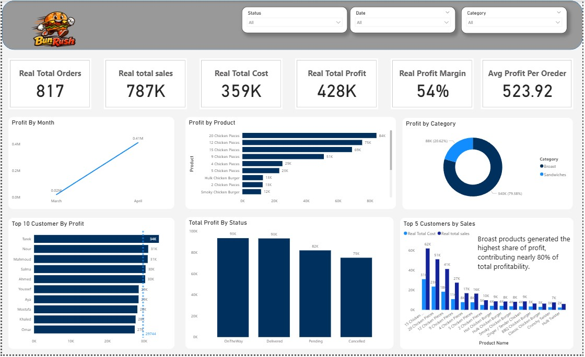
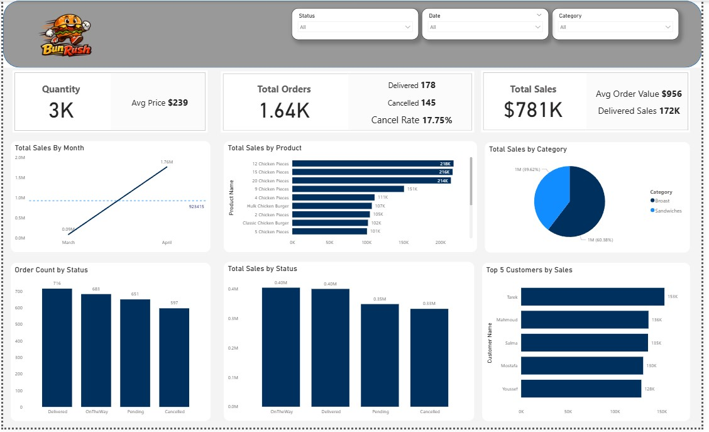
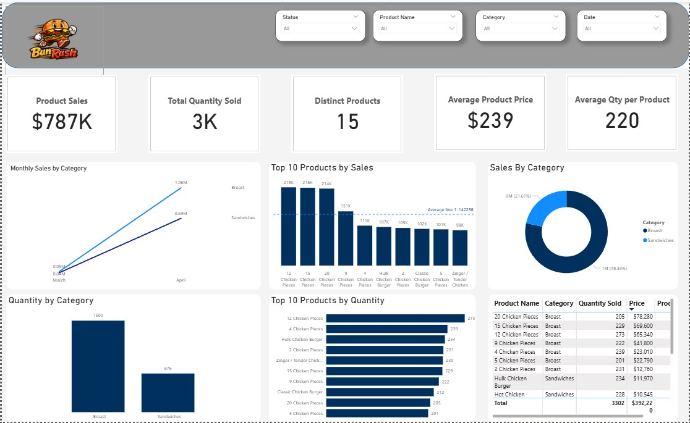

PROSTESH PROJECT
End-to-end restaurant analytics project combining web development, Firebase cloud database, Power BI dashboards, and business intelligence reporting.
Project Overview
This project was developed to analyze restaurant performance data and transform operational records into actionable business insights. It integrates front-end web development with Firebase as a cloud database, then visualizes key business metrics using BI dashboards.
Tools & Technologies
HTML, CSS, JavaScript, Firebase, Power BI, Data Modeling, Dashboard Design
Key Features
- Interactive restaurant analytics dashboard
- Cloud-based data storage using Firebase
- Sales and profitability analysis
- Performance tracking and business reporting
Project Screenshots


